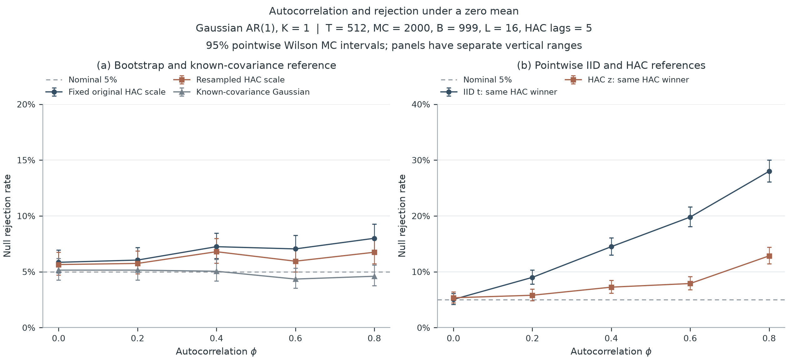
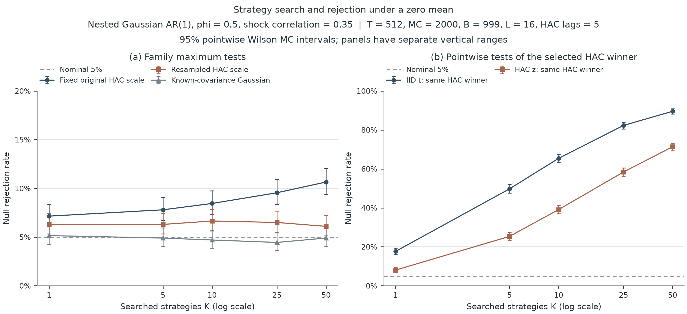
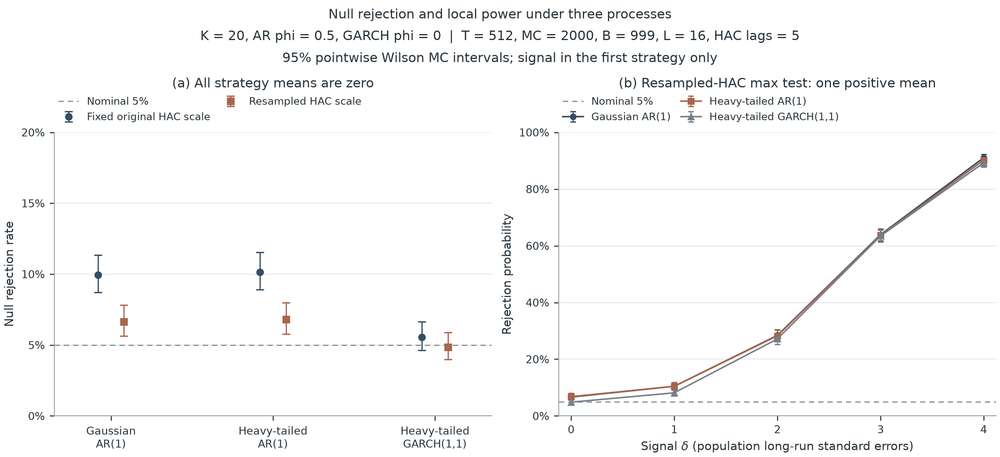

时间依赖与策略筛选
如何影响显著性
有限样本评价 · 固定尺度与逐次重新学生化
同一个正均值结果，在独立观测、时间相关观测和筛选之后，统计证据的含义并不相同。 本研究以已知真实均值的模拟数据检验这些差别，并检查联合重抽样自身的误报偏差。
本轮只改变 Bootstrap 统计量的分母：旧方法固定使用原样本 HAC 标准误，新方法在每次重抽样中重新估计同一滞后阶的 HAC。 两种方法使用相同数据、相同行索引和相同原样本统计量。块长、带宽、评价格点与验收规则均在正式评价前固定。
主实验 T = 512，每个场景 2,000 次重复，每次 999 次重抽样； 名义水平 5%，正式评价种子 20261004。开发试验与本轮使用不同随机流。
主要结果
| 零均值场景 | 固定尺度 | 重新学生化 | 高斯模型参考 |
|---|---|---|---|
| 单策略，φ = 0.8 | 8.00% [6.89%, 9.27%] | 6.75% [5.73%, 7.93%] | 4.60% [3.77%, 5.61%] |
| 50 条候选，φ = 0.5 | 10.65% [9.37%, 12.08%] | 6.10% [5.13%, 7.24%] | 4.90% [4.04%, 5.94%] |
| 重尾 AR，20 条候选 | 10.15% [8.90%, 11.55%] | 6.80% [5.78%, 7.99%] | — |
| GARCH，20 条候选 | 5.55% [4.63%, 6.64%] | 4.85% [3.99%, 5.88%] | — |
方括号为点态 95% Wilson Monte Carlo 区间。高斯参考仅在已知生成参数的高斯场景存在； 重尾与 GARCH 不套用高斯最大值分布。
这次评价未通过预设的证据门槛：18 / 19 个场景的误报率同时上界超过 7%。这不表示这些场景的真实误报率必然超过 7%；新方法的有限样本偏差与模拟精度仍需考虑。研究版本不提供普适的 5% 校准保证。
一 时间依赖与尺度估计

PDF · SVG · figure-1-dependence.csv
二 筛选之后的全族检验

PDF · SVG · figure-2-selection.csv
三 误报与检出能力

PDF · SVG · figure-3-size.csv · figure-3-power.csv
额外评价格点
下表每个场景有 10 条零均值候选，使用原样本确定的样本量规则与块长。最后一列是涵盖全部 19 个主实验与额外零均值格点的 Bonferroni 调整单侧 Clopper–Pearson 上界。它衡量模拟中的误报率，与前面的点态 Wilson 区间用途不同。
| 过程 | T | φ | 创新相关 | 新方法误报率 | 同时上界 |
|---|---|---|---|---|---|
| gaussian_ar | 256 | 0.7 | 0.0 | 8.50% | 11.25% |
| gaussian_ar | 1024 | 0.7 | 0.8 | 6.90% | 9.43% |
| gaussian_ar | 2048 | 0.9 | 0.35 | 10.60% | 13.59% |
| student_ar | 1024 | 0.7 | 0.0 | 6.80% | 9.32% |
| garch | 1024 | 0.0 | 0.8 | 6.40% | 8.86% |
| gaussian_ar | 512 | -0.4 | 0.35 | 5.00% | 7.23% |
偏差诊断与解释边界
除拒绝计数外，本轮保存了高斯场景中 HAC 方差与真实有限样本均值方差的比值，以及 stationary-bootstrap 均值的精确条件方差比值。 这些诊断帮助区分标准误估计偏差与重抽样分布偏差。条件方差的“精确”只针对当前数据和抽样机制，不是对未知总体方差的精确估计。
块长敏感性以另外的随机流评价 0.5、1、2、4 倍默认块长，结果完整保存在附表。它未用于挑选主图设置。 重新学生化不构成二阶正确性的证明，三个过程也不能代替对全部金融时间序列的有效性证明。
审计输入应是同期、等间隔、已扣成本的基准调整收益。候选族必须由研究者定义。 隐藏试验、自适应构造策略、数据时间错误、反复查看结果和交易成本遗漏，都不能从一张收益矩阵自动恢复。
复现与原始记录
strategy-inference reproduce --study calibration --profile full --output results/calibration/full
运行用时 2735.4 秒。计算源码版本 579697d85a3304898cb171a5e3b6b0d043f10b0e。
协议、种子、环境与哈希 · 额外格点计数 ·
块长敏感性 · 方差诊断